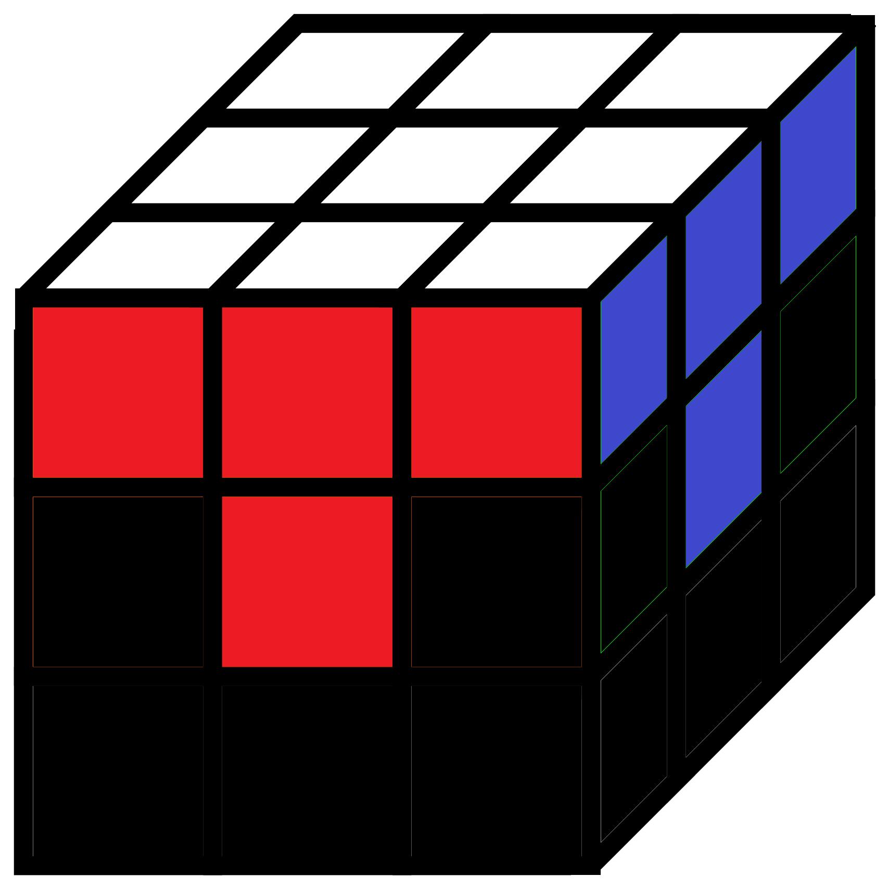
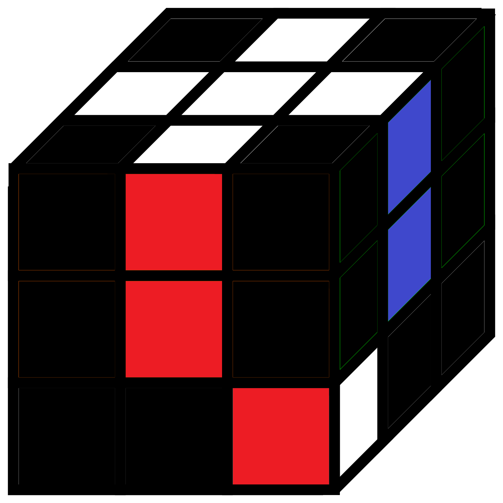
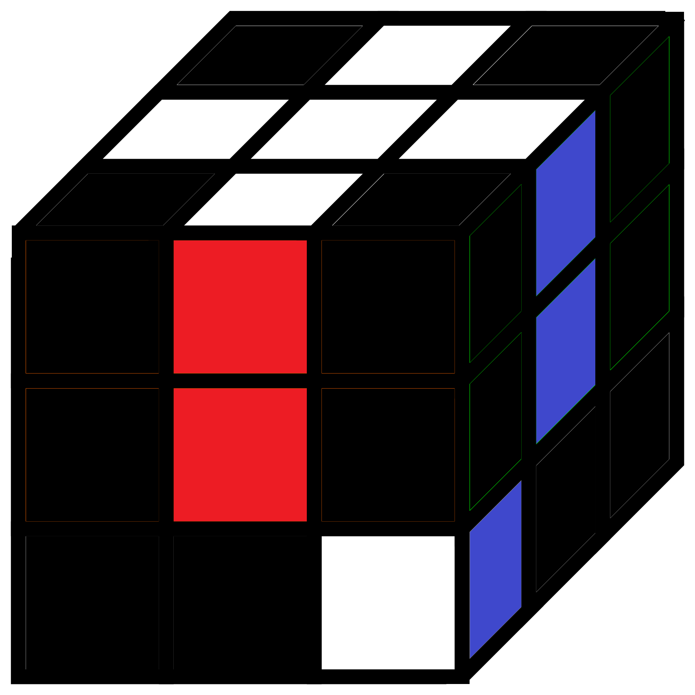
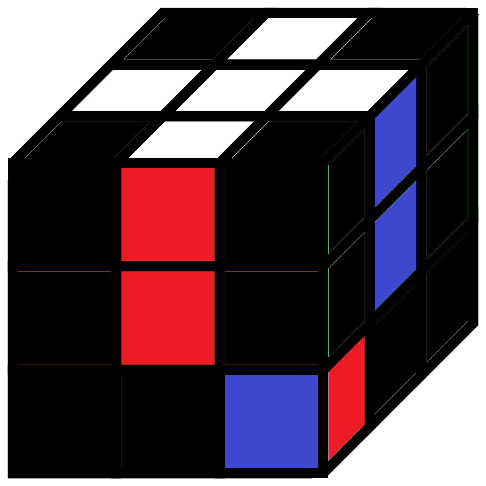

Now you have to try to put the edges at the right place. To do that look at the instruction down (pictures). You can always rotate the bottom line.
|  |  |  |  |
|
The Goal |
Ri Di R |
F D Fi |
F L D2 li Fi |